Chapter1 概论
- 数据、数据元素、数据项、数据对象、数据结构等基本概念
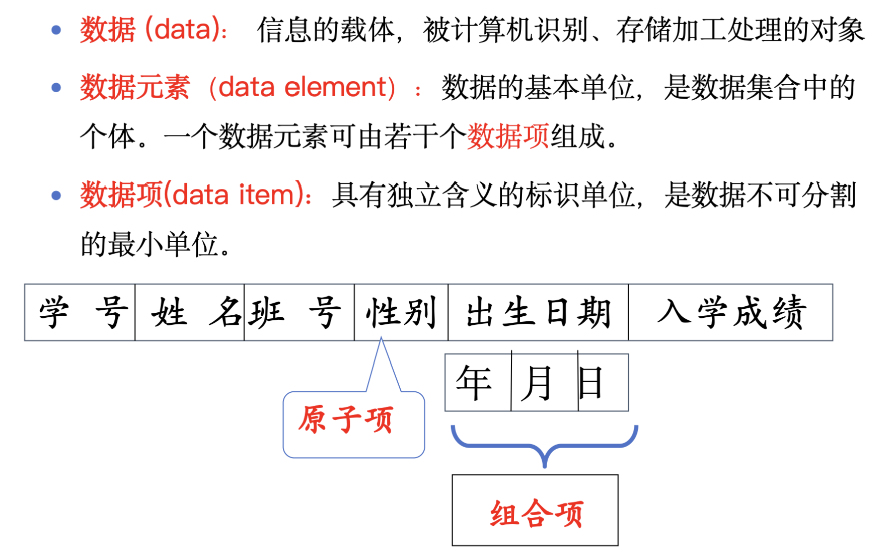
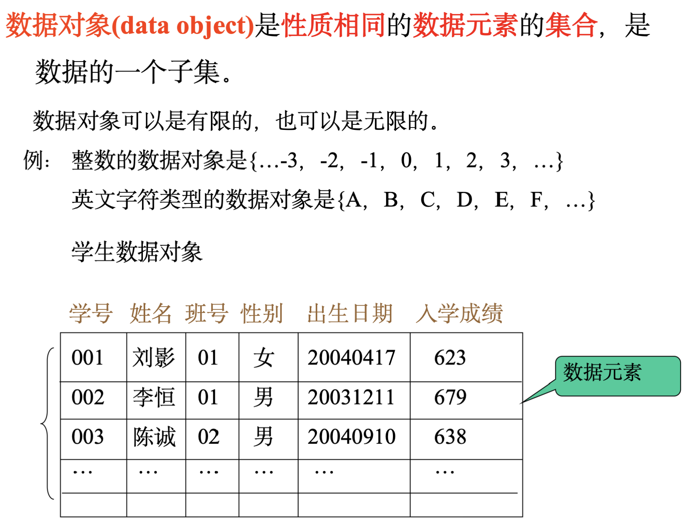
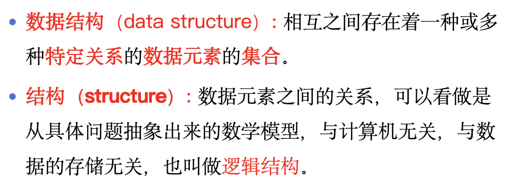
- 逻辑结构，存储结构及数据运算的含义及其相互关系

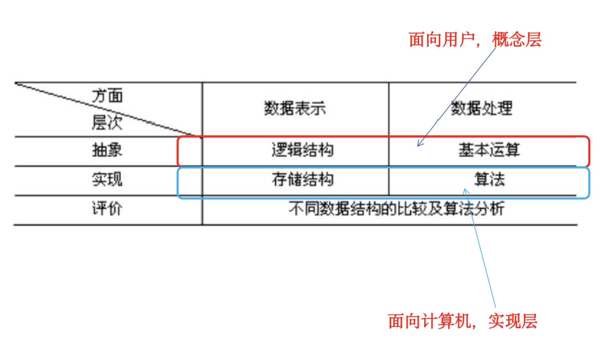
- 算法评价标准：正确性、可读性、健壮性、效率与存储量需求、支持分布式和并行处理的算法在大数据场景下更有优势。
Chapter2 线性表
2.2链表
- 头节点的使用：头节点的指针域指向第一个数据节点的地址
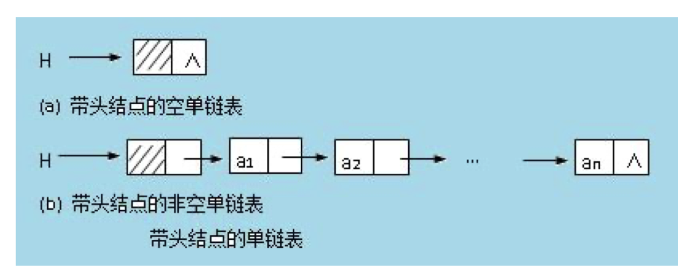
Chapter3 栈、队列
3.1 栈
3.1.1 顺序栈
- 非空栈中的栈顶指针top来指向栈顶元素的下一个位置；
- 空栈时top = base，栈中元素的数量 = top - base；
#### 3.1.2 链栈 - 链表指针方向是从栈顶指向栈底；
3.1.3 应用
- 括弧匹配检验
- 中缀表达式：左括号在栈外时优先级最高，在栈内时优先级很 低，仅高于栈外的右括号；
- 后缀表达式；
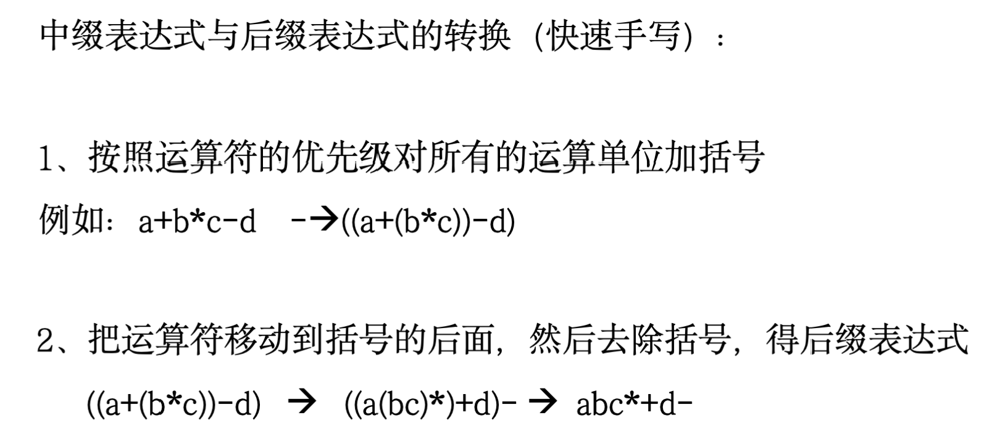
- 尾递归：递归调用出现在函数中的最后一行，并且没有任何局部变量参与最后一行代码的计算。此时支持“尾递归优化”的编程语言就可以在执行尾递归代码时不进行入栈操作；
3.2 队列
3.2.1 顺序队列
- 队空是front = rear = 0；非空队列头指针始终指向队列头元素，而尾指针始终指向队列尾元素的下一个位置。
- 循环队列：解决“假溢出”；判空采用：front ==
rear；判满采用：少用一个元素空间，当队尾指针加1就会从后面赶上队头指针，这种情况下队满的条件是：(rear+1)
% MAXSIZE == front；
#### 3.2.2 链队
Chapter4 串
4.1 串的基本操作
Concat(&T, S1, S2); // 用T返回由S1和S2连接而成的新串两串
SubString(&Sub, S, pos, len); // 用Sub返回S字符串第pos个位置开始的长度为len的子串
StrCompare(S, T); // 两串比较S > T，返回值 > 0；S = T，返回值 = 0；S < T，返回值 < 0；
Index(S, T, pos); // 在S中第pos个位置开始后的部分找到与T相同的子串，返回第一次出现的位置，未找到则返回 0
Replace(&S, T, V); // 用V替换S中与T相等的不重叠子串
StrInsert(&S, pos, T); // 在S的第pos个位置前插入T
StrDelete(&S, pos, len); // 在S中的第pos个位置开始删除长度为len的子串4.2 串的模式匹配算法
4.2.1 简单模式匹配算法Brute Force
逐个遍历字符串的每个字母，并逐个检查从它开始的长为len个的字符是否匹配；
int Index(SString S, SString T, int pos) {
i = pos; j = 1;
while (i <= S[0] && j <= T[0]) {
if (S[i] == T[j]) {
++i;
++j;
}
// 继续比较后继字符
else {
i = i-j+2;
j = 1;
}
// 指针后退重新开始匹配
}
if (j > T[0])
return i-T[0];
else return 0;
} // Index最好情况下平均时间复杂度为\(O(m +
n)\)，最坏情况下为\(O(m *
n)\)。
#### 4.2.2 KMP算法
见KMP算法。
Chapter5 数组与广义表
5.1 数组
- 数组是线性表的扩展，其数据元素本身也是线性表；
- 数组中各元素都具有统一的类型；
####
### 5. 2 矩阵的压缩存储 - 目的是为了节省空间；
#### 5.2.1 对称矩阵
#### 5.2.2 带状矩阵
#### 5.2.3 随机稀疏矩阵
（1）顺序存储方法：三元表法
（2）链式存储方法：十字链表法
在行、列两个方向上，将非零元素链接在一起。克服三元组表在矩阵的非零元素位置或个数经常变动时的使用不便。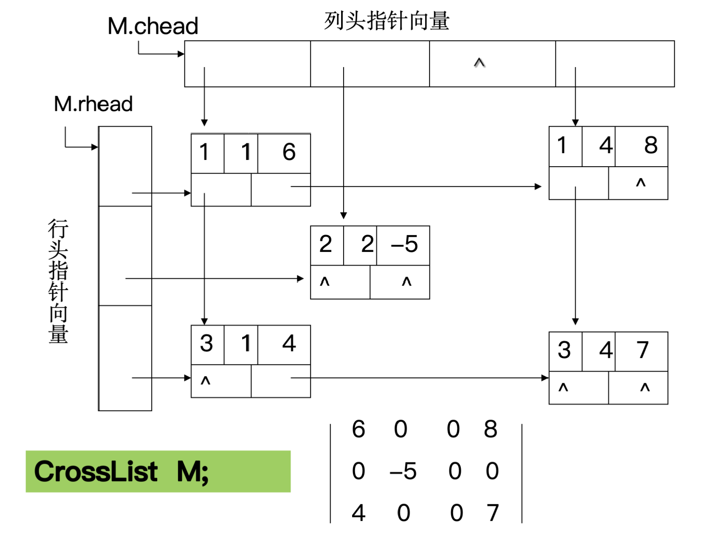
### 5.3 广义表 - 广义表是由零个或多个原子或者子表组成的有限序列；
- 原子：逻辑上不能再分解的元素；
- 子表：作为广义表中元素的广义表；
- 广义表中的元素全部为原子时即为线性表，线性表是广义表的特例，广义表是线性表的推广；
- 一般用大写字母表示广义表的名称，用小写字母表示原子；
- 表的长度：表中的（第一层）元素个数；
- 表的深度：表中元素的最深嵌套层数；
- 表头：表中的第一个元素；
- 表尾：除第一个元素外，剩余元素构成的广义表。 任何一个非空广义表的表尾必定仍为广义表；
Chapter 6 树和二叉树
6.1 树
Chapter7 图
7.1 一些基本概念：


7.2 图的基本存储结构


7.3 最小生成树

7.4 拓扑排序
7.4.1 无前驱的顶点优先算法

7.4.2 无后继的顶点优先

7.5 关键路径
7.5.1 AOE网


7.5.2 关键术语

7.5.3 求解方法
希望求解关键路径，即源点到汇点最长的路径；
- 对于事件
- 最早发生时间：源点为0，其他点 = Max(源点到该事件的路径长度)；
- 最迟发生时间：（倒着算）汇点 = 最早发生时间，其他点 = Min(下一个点最早发生时间 - 边权)；（为了保证下一个事件能最早发生，所以取最小的那个时间）
- 对于活动
- 最早发生时间：等于起始点事件的最早发生时间；
- 最迟发生时间：等于终点时间的最迟发生时间 - 边权；
关键路径为最迟发生时间 - 最早发生时间 = 0的边；
Chapter9 查找
9.1 顺序查找
int Search_Seq(SSTable ST, KeyType key) {
ST.elem[0].key = key; // 用作哨兵；
for (int i = ST.length; key != ST.elem[i].key; i--) {
return i; // 找到了就返回正确的位置，没找到返回0；
}
}监视哨的好处：无需进行边界检测，提高效率；
平均查找长度ASL：
（1）成功ASL：\((1 + n)* n /2 * \frac{1}{n} = \frac{n+1}{2}\)；
（2）失败ASL：\(1 + n\)；
9.2 折半查找
9.2.1 构建步骤
（1）mid = (1 + n)/2 作为根节点，(1 + mid - 1)/2 作为它的左孩子，(mid
+ 1 + n)/2 作为右孩子；
（2）如此构建折半查找树；
9.2.2 平均查找长度ASL
- 成功ASL：待查找的节点在第\(x\)层，需要比较的次数就是\(x\)，加权求和即可；
9.3 二叉排序树
9.3.1 构建步骤
（1）给定序列，第一个节点作为根节点；
（2）如果比上一个节点小，则放在它的左子树；比上一个节点大，则放在它的右子树；
9.3.2 调整（删除节点*p）
（1）p是叶子结点：修改双亲指针即可；
（2）p只有左（右）孩子：用它左（右）孩子的指针代替它即可；
（3）p有两个孩子：用它的中序后继（或前驱）代替它；其实就是左子树中最右或者右子树中最左的节点代替它。
9.4 平衡二叉树
9.4.1 维持平衡操作
最小不平衡子树：最下往上，第一个出现左右子树深度之差 > 1的节点。
1. LL型
新插入的节点在最小不平衡子树的左孩子的左子树；
调整方法：左孩子向右上旋转；
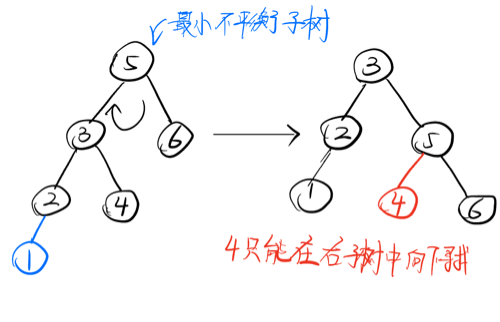
2. RR型
新插入的节点在最小不平衡子树的右孩子的右子树；
调整方法：右孩子向左上旋转；（和LL型刚好相反）
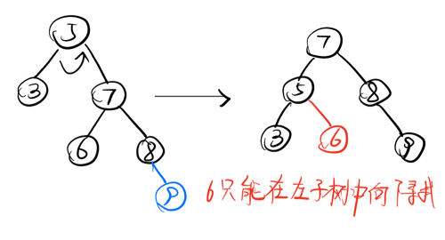
3.LR型
新插入的节点在最小不平衡子树的左孩子的右子树；
调整方法：左孩子的右子树先左上旋，再右上旋；
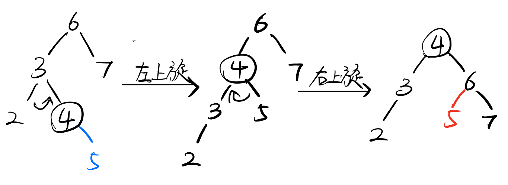
4. RL型
新插入的节点在最小不平衡子树的右孩子的左子树；
调整方法：右孩子的左子树先右上旋，再左上旋；（和LR型刚好相反）
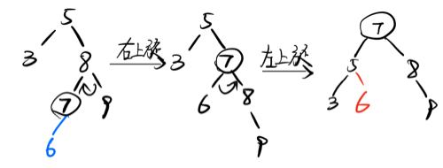
9.5 B-树
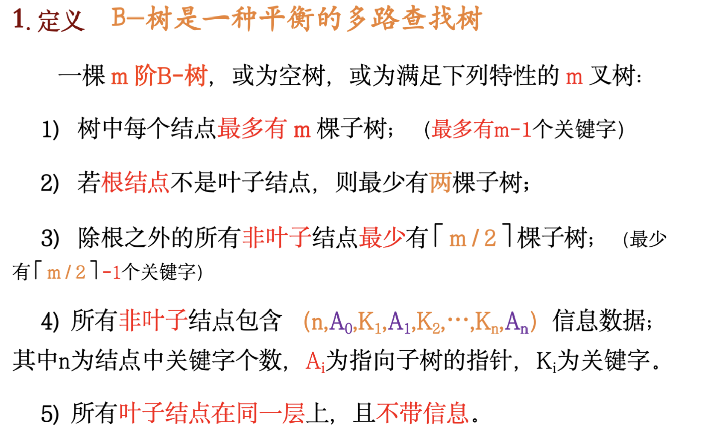
Chapter 10 内部排序
Chapter 11 外部排序
11.1 置换选择法
假设内存中用到的优先队列WA规模为\(5\)，初始待排序文件FI：
5, 20, 26, 46, 31, 25, 16, 51, 17, 28, 1
文件放入内存工作区：
WA：5,20,26,46,31，第一个归并段：``；
第一趟：
WA：25,20,26,46,31，第一个归并段：5；
第二趟：
WA：25,16,26,46,31，第一个归并段：5,20；
第三趟：（不能出最小的16，要出一个比20大的）
WA：51,16,26,46,31，第一个归并段：5,20,25；
第四趟：
WA：51,16,17,46,31，第一个归并段：5,20,25,26；
第五趟：
WA：51,16,17,46,28，第一个归并段：5,20,25,26,31；
第六趟：
WA：51,16,17,1,28，第一个归并段：5,20,25,26,31,46；
第七趟：
WA：16,17,1,28，第一个归并段：5,20,25,26,31,46,51；
第八趟～第十一趟：（此时剩余待排序文件无法放入第一个归并段，生成第二个归并段）
第二个归并段：1,16,17,28；